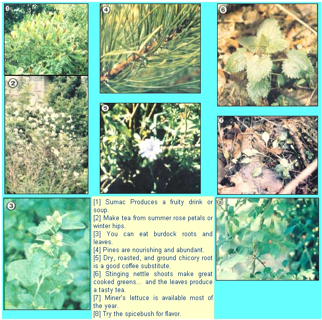

PHOTOS SUPPLIED BY THE AUTHOR
Tom Brown, Jr. Was brought up in the way of the woods by a displaced Apache named Stalking Wolf. Today, he is one of our country’s leading outdoors experts, author of The Tracker and The Search, and head of one of the largest tracking and wilderness survival schools in the U.S. (write Tom Brown, Jr., Dept. TMEN, Box 173, Asbury, New Jersey 08802). Tom has agreed to do a series of special features for MOTHER, articles that will help us all learn how to survive in the wilds. With the Tracker’s guidance, we can become more…
Tom Brown, Jr.
It's very difficult to write a survival article on wild foods that will be relevant to readers in a broad range of areas and terrains. Therefore, I've tried to include a variety of widely distributed plants that can be easily identified and are-for the most part-to be found throughout the year.
Remember, though, that when a person sets out to gather wild edibles, he or she must do so with a great deal of caution. Some people, for example, might have allergic reactions to otherwise "safe" plants, and a number of factors-including the time of collection and method of preparation-can make a big difference in both the safety and the palatability of many free foods. You should never, of course, pick plants close to roadways, polluted waterways, croplands, or any other place where chemical sprays or fumes could have contaminated them.
Furthermore, the forager should never eat a plant that looks unhealthy, or one that he or she can't identify beyond the shadow of a doubt. Whenever my survival school students collect wild edibles, I ask them whether they'd stake their lives on their ability to identify the species at hand . . . because that, in fact, is just what they'll be doing when they eat it. So use a good Held manual on the subject . . . preferably one that contains both sketches and photographs showing leaf, root, flower, and stalk structure, and-when possible-get some training from a wild-plants expert in your area (both the common names of and, surprisingly, the appearance of some plants will change from one locale to another).
GENERAL TIPS
A person in a survival situation will likely find that roots and tubers are most easily gathered with a "digging stick" (a sturdy branch pointed at one end). When working in rocky soil, it's a good idea to fire-harden the point by heating-but not burning-it over glowing coals. The digger is then pushed into the ground next to the plant, and the root is levered out.
To collect seeds, tie a shirt in the form of a bag (wrapping the sleeves around the neck hole to close it) ... place the seed heads in the sack . . . and shake the kernels loose. Or, you might want to make a willow hoop out of a flexible sapling and place the shirt over it to form a shallow tray into which seeds can be knocked off.
Finally, keep in mind that plants are living entities and-many people believe-have their own spirits. Whenever I pick one, I thank it for giving its life to keep me alive. And, of course, we must all be very careful not to wipe out a species in any one area.
THE BIG FOUR . . .
These food sources are both familiar to most folks and-across much of North America-abundant!
Oaks. All acorns ( Quercus species) are edible, though some are a good bit sweeter than others. However, if you simply shell one of the seeds and take a bite, it's likely that you'll immediately be turned off by the very astringent, burning quality typical of most oak nuts. Fortunately, you can leach out the tannic acid that makes them bitter, and the easiest way to do so is to shell the acorns, smash them (you'll want to break them up but not pulverize them), wrap the pieces in a cloth, and place them in a stream for about half a day (longer, if they haven't lost their unpleasant taste by that time). Another method is to boil the nuts, changing the water frequently, until the flavor appeals to you.
Once they're leached, the acorns can be eaten raw, toasted, added to stews, or pounded fine and mixed with wild-grain flours to make bread. They're a valuable source of proteins and carbohydrates that's available from early fall until well into the next spring. And acorn sprouts can be prepared in the same ways as the nuts themselves, or-in the case of most white oak species-can be eaten right off the ground.
Grasses. Of the many grasses found in North America, all but a few are edible, with their seeds being the most palatable part. However, it's best to select grasses with large seed heads or clusters, since trying to collect small ones would likely be a waste of vital energy.
The seeds should be dried and parched, then winnowed to remove the chaff. The kernels can then be toasted and eaten plain, added to stews, or ground into flour for bread. Some of the best, safest, and most widely available grasses are crab, goose, foxtail, blue, rye, and orchard, plus wild oats and millet. Eat the Weeds by Ben Harris (Keats, 1973, $1.50) and Handbook of Edible Wild Plants by Euell Gibbons and Gordon Tucker (Donning Company, 1979, $4.95) are both good sources of information on edible grasses.
Pines. Not all evergreens are edible, but the Pinus (pine) species are. These trees offer a wide assortment of munchables that are all easily collected and prepared. You can, for instance, add the pollen to stew as a thickener and to bread for flavor. And if you heat the cones gently by a fire until they open, the seeds can be easily extracted. These can then be eaten raw, parched and winnowed, or shelled and baked-depending on the species-and added to soup and bread. Use pine needles (along with those from spruce and hemlock . . . but be sure you're not gathering the needles from the red-berried, poisonous American yew, Taxus canadensis ) to make a nourishing tea. You can also dry the inner bark of pine, spruce (Picea species), and hemlock ( Tsuga canadensis ) and add it to stew and bread.
Cattails. The cattail (either Typha latifolia or T. angustifolia ) can be utilized at almost any time of the year, because at each stage of its life cycle it has a number of edible parts. For example, you can mash the root up in cold water to separate the soluble starches, and-once these have settled, and the fibers and water have been removed-add the material to stew or mix it with other wild flours to make bread. The new shoots can be eaten raw, and those up to a foot tall may be prepared like asparagus. The head, before it emerges, can be cooked and eaten like corn on the cob. Finally, it's possible to collect cattail pollen for use in soup or as a flour.
. . . AND MANY MORE
Clover. Many clovers ( Trifolium species) are edible, the best being the red, sweet, yellow, white, white sweet, buffalo, alsike, and crimson varieties. Boil or steam the flowers and new green leaves and eat them as you would spinach. Tea made from the dried flowers is also relatively high in food value.
Mint. Most members of the mint family ( Mentha species) can be used as tea or provide flavoring for other foods and drinks. For example, you can steep the green (or dried) leaves for a short time in hot water and add the liquid directly to a stew.
Spicebush. The spicebush ( Lindera benzoin ) is the forerunner of our modern allspice, and the pioneers dried and powdered its berries to make a versatile flavoring. For a zesty tea, steep its bark, young twigs, and young leaves in warm water for about ten minutes. (This beverage is flavorful, but its food value is quite low.)
Miner's Lettuce. The Montia species (which belong to the same family-Portulacaceae-as purslane, another popular edible green) are available during much of the year, and these typically small, low-growing residents of damp places make a good cooked vegetable. It's also possible to eat them raw or add them to soup and stew. (The new, small leaves have the best flavor.)
Sumac. All of the Rhus species are edible, with the exception of poison sumac, which can be distinguished from the others by its loose clusters of white berries and the absence of teeth on the leaves. To make a good tea or cold drink from the bright red stag-horn, smooth, and winged sumac berries, just bruise the clusters in cold water ... let the brew sit for ten minutes . . . strain it ... and drink the beverage hot or cold. You can also make a fine soup with a fruity flavor by heating the berry clusters and then straining them out before eating the broth.
Violets. The new, green leaves of the Viola species can be cooked as a green, added to soup as a thickener, or eaten raw in a salad. The dried leaves, on the other hand, make excellent tea that's high in vitamin A. The violet's taste, however, is very bland, and the leaves will be most appealing when mixed with other greens.
Dandelions. You can eat the tender leaves of Taraxacum officinale raw or cook them like a potherb . . . if they're gathered before the plants bloom. The mature flower itself is tasty when dipped in a batter made from wild-grain flour and fried like a fritter, while ground dried roots make an excellent hot drink.
Chicory. When dried, roasted, and ground, chicory ( Cichorium intybus ) roots will brew up into a coffeelike hot drink, and the new green leaves can be cooked as a potherb or simply added to stew. Also, the blanched white part of the new leaves at the plant's base are tasty when eaten raw . . . alone or in a salad.
Greenbriers. The new green leaves, sprouts, or shoots-as well as the young tendrils-of the Smilax species can be eaten raw or cooked. In many parts of the country, greenbriers have edible parts from spring through the middle of autumn.
Stinging Nettles. The stinging nettle ( Urtica species) is a very good survival plant, since it can be found in many areas of the country. Steam or boil the young shoots or leaves to produce a great cooked green. Or boil the older leaves for ten minutes, then strain out the fibers, to make a tea. Be careful, however, when handling this plant: Its "bite" is very painful, but fortunately, the stinging capability is destroyed by cooking. (The plant's stem fibers, by the way, make good cordage.)
Roses. It's possible to steep the fresh petals of the Rosa species in hot water to make a very tasty tea. Also, the dried and pitted rose hips can be eaten raw and make an excellent survival food, because they can often be found throughout the winter and are packed with vitamin C.
Great Burdock. The young green leaves of Arctium lappa can be eaten raw or prepared as a potherb for a quick survival food. The roots of first-year plants must be peeled of their inedible rind, and can then be boiled-in two changes of water-for 30 to 40 minutes and eaten like potatoes.
Amaranth. You can roast and grind the seeds of the mature plants of Amaranthus species into a rich flour. The young leaves can be eaten raw, added to other cooked vegetables, or put directly in stew. (This food source is available, in many areas, from spring through fall.)
Waterlilies. Almost all waterlilies ( Nymphaea and Nuphar species) are edible and can be gathered most of the year. During the summer months, when the rootstocks become mushy and rather tasteless, they're still an excellent source of survival food. Additionally, the young, unfurling leaves and unopened buds can be prepared as a potherb. The seeds can be parched, winnowed, and ground into a nutritious flour, and the potato-shaped tubers of the tuberous waterlily (N. tuberosa) can be dug from the mud and prepared like-what else?-potatoes. Two of the more common edible varieties are the yellow pond lily and the fragrant pond lily. (Be careful, though, to collect any such plants from pollution-free waters!)
Arrowhead. Use a forked stick to push the tubers of this marsh plant ( Sagittaria species) free of the mud, after which they'll float to the surface. Though these can be cooked like potatoes, many people prefer to eat them raw, as a nibble food. The arrowhead is an excellent survival edible because it's available throughout the year, but the roots do get bitter and soft in midsummer and are especially so when the plant is in flower.
Chickweeds. Chickweeds of the Stellaria and Cerastium species make very good cooked greens, and all but the mouse-eared type can be eaten raw (although some people don't care much for the taste).
Common Plantains. When steamed or boiled, the tender young leaves of the Plantago species can be eaten as a cooked vegetable or added to soup and stew. The very young, unfurling leaves are sometimes eaten raw. Then, too, I like to grind the parched and winnowed seeds into wild flour that has a distinctive taste and a healthful dose of protein.
Prickly Pear. This fruit's fleshy pulp makes an excellent trail-side food. The seeds of the Opuntia species can also be parched and ground into Hour, and the young pads-peeled-can be eaten raw or fried.
Winter Cress. You can eat the winter rosettes of Barbarea vulgaris raw or add them to salads, but the leaves of the spring plants must be prepared as a potherb to rid them of their bitter taste. If cooked before they bloom, the flower heads resemble broccoli, but might require two changes of water.
TAKE A SHOPPING TRIP!
The plants described here represent just a small sampling of the many valuable and often delicious vegetables that can be found growing wild. Get yourself a good field guide and take advantage of summer walks to sharpen your identification skills.
Foraging is a rewarding and enjoyable family activity, as well as an emergency technique . . . and it will allow you to add variety to your meals while lowering your grocery bills!
EDITOR'S NOTE: As a basic resource, MOTHER'S staffers heartily recommend Lee Peterson's A Field Guide to Edible Wild Plants, which is available in many libraries and bookstores. . . or-for $10.95 plus 95 cents shipping and handling-from Mother's Bookshelf(restricted), P.O. Box 70, Hendersonville, North Carolina 28791.
|
 |
|
|